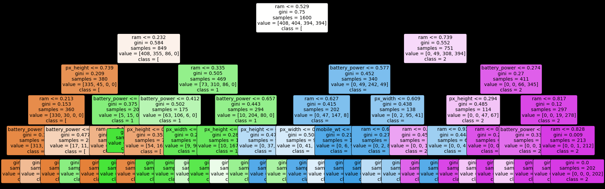
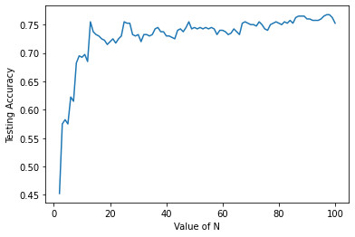

UAS Studi Kasus Mobile Price
Contents
UAS Studi Kasus Mobile Price#
Model KNN,Naive Bayes,K-Means,Decision Tree dan Random Forest
from google.colab import drive
drive.mount('/content/gdrive')
KeyboardInterruptTraceback (most recent call last)
<ipython-input-1-4996ee3d8d09> in <module>
1 from google.colab import drive
----> 2 drive.mount('/content/gdrive')
/usr/local/lib/python3.8/dist-packages/google/colab/drive.py in mount(mountpoint, force_remount, timeout_ms, readonly)
99 def mount(mountpoint, force_remount=False, timeout_ms=120000, readonly=False):
100 """Mount your Google Drive at the specified mountpoint path."""
--> 101 return _mount(
102 mountpoint,
103 force_remount=force_remount,
/usr/local/lib/python3.8/dist-packages/google/colab/drive.py in _mount(mountpoint, force_remount, timeout_ms, ephemeral, readonly)
122 'TBE_EPHEM_CREDS_ADDR'] if ephemeral else _os.environ['TBE_CREDS_ADDR']
123 if ephemeral:
--> 124 _message.blocking_request(
125 'request_auth', request={'authType': 'dfs_ephemeral'}, timeout_sec=None)
126
/usr/local/lib/python3.8/dist-packages/google/colab/_message.py in blocking_request(request_type, request, timeout_sec, parent)
169 request_id = send_request(
170 request_type, request, parent=parent, expect_reply=True)
--> 171 return read_reply_from_input(request_id, timeout_sec)
/usr/local/lib/python3.8/dist-packages/google/colab/_message.py in read_reply_from_input(message_id, timeout_sec)
95 reply = _read_next_input_message()
96 if reply == _NOT_READY or not isinstance(reply, dict):
---> 97 time.sleep(0.025)
98 continue
99 if (reply.get('type') == 'colab_reply' and
KeyboardInterrupt:
#Preprocessing Data
import pandas as pd
import numpy as np
data = pd.read_csv('https://raw.githubusercontent.com/rahadis/datamining/main/train.csv')
data.fillna(0,inplace=True)
data
| battery_power | blue | clock_speed | dual_sim | fc | four_g | int_memory | m_dep | mobile_wt | n_cores | ... | px_height | px_width | ram | sc_h | sc_w | talk_time | three_g | touch_screen | wifi | price_range | |
|---|---|---|---|---|---|---|---|---|---|---|---|---|---|---|---|---|---|---|---|---|---|
| 0 | 842 | 0 | 2.2 | 0 | 1 | 0 | 7 | 0.6 | 188 | 2 | ... | 20 | 756 | 2549 | 9 | 7 | 19 | 0 | 0 | 1 | 1 |
| 1 | 1021 | 1 | 0.5 | 1 | 0 | 1 | 53 | 0.7 | 136 | 3 | ... | 905 | 1988 | 2631 | 17 | 3 | 7 | 1 | 1 | 0 | 2 |
| 2 | 563 | 1 | 0.5 | 1 | 2 | 1 | 41 | 0.9 | 145 | 5 | ... | 1263 | 1716 | 2603 | 11 | 2 | 9 | 1 | 1 | 0 | 2 |
| 3 | 615 | 1 | 2.5 | 0 | 0 | 0 | 10 | 0.8 | 131 | 6 | ... | 1216 | 1786 | 2769 | 16 | 8 | 11 | 1 | 0 | 0 | 2 |
| 4 | 1821 | 1 | 1.2 | 0 | 13 | 1 | 44 | 0.6 | 141 | 2 | ... | 1208 | 1212 | 1411 | 8 | 2 | 15 | 1 | 1 | 0 | 1 |
| ... | ... | ... | ... | ... | ... | ... | ... | ... | ... | ... | ... | ... | ... | ... | ... | ... | ... | ... | ... | ... | ... |
| 1995 | 794 | 1 | 0.5 | 1 | 0 | 1 | 2 | 0.8 | 106 | 6 | ... | 1222 | 1890 | 668 | 13 | 4 | 19 | 1 | 1 | 0 | 0 |
| 1996 | 1965 | 1 | 2.6 | 1 | 0 | 0 | 39 | 0.2 | 187 | 4 | ... | 915 | 1965 | 2032 | 11 | 10 | 16 | 1 | 1 | 1 | 2 |
| 1997 | 1911 | 0 | 0.9 | 1 | 1 | 1 | 36 | 0.7 | 108 | 8 | ... | 868 | 1632 | 3057 | 9 | 1 | 5 | 1 | 1 | 0 | 3 |
| 1998 | 1512 | 0 | 0.9 | 0 | 4 | 1 | 46 | 0.1 | 145 | 5 | ... | 336 | 670 | 869 | 18 | 10 | 19 | 1 | 1 | 1 | 0 |
| 1999 | 510 | 1 | 2.0 | 1 | 5 | 1 | 45 | 0.9 | 168 | 6 | ... | 483 | 754 | 3919 | 19 | 4 | 2 | 1 | 1 | 1 | 3 |
2000 rows × 21 columns
cd = data.drop(columns=['price_range'],axis=1)
cd
| battery_power | blue | clock_speed | dual_sim | fc | four_g | int_memory | m_dep | mobile_wt | n_cores | pc | px_height | px_width | ram | sc_h | sc_w | talk_time | three_g | touch_screen | wifi | |
|---|---|---|---|---|---|---|---|---|---|---|---|---|---|---|---|---|---|---|---|---|
| 0 | 842 | 0 | 2.2 | 0 | 1 | 0 | 7 | 0.6 | 188 | 2 | 2 | 20 | 756 | 2549 | 9 | 7 | 19 | 0 | 0 | 1 |
| 1 | 1021 | 1 | 0.5 | 1 | 0 | 1 | 53 | 0.7 | 136 | 3 | 6 | 905 | 1988 | 2631 | 17 | 3 | 7 | 1 | 1 | 0 |
| 2 | 563 | 1 | 0.5 | 1 | 2 | 1 | 41 | 0.9 | 145 | 5 | 6 | 1263 | 1716 | 2603 | 11 | 2 | 9 | 1 | 1 | 0 |
| 3 | 615 | 1 | 2.5 | 0 | 0 | 0 | 10 | 0.8 | 131 | 6 | 9 | 1216 | 1786 | 2769 | 16 | 8 | 11 | 1 | 0 | 0 |
| 4 | 1821 | 1 | 1.2 | 0 | 13 | 1 | 44 | 0.6 | 141 | 2 | 14 | 1208 | 1212 | 1411 | 8 | 2 | 15 | 1 | 1 | 0 |
| ... | ... | ... | ... | ... | ... | ... | ... | ... | ... | ... | ... | ... | ... | ... | ... | ... | ... | ... | ... | ... |
| 1995 | 794 | 1 | 0.5 | 1 | 0 | 1 | 2 | 0.8 | 106 | 6 | 14 | 1222 | 1890 | 668 | 13 | 4 | 19 | 1 | 1 | 0 |
| 1996 | 1965 | 1 | 2.6 | 1 | 0 | 0 | 39 | 0.2 | 187 | 4 | 3 | 915 | 1965 | 2032 | 11 | 10 | 16 | 1 | 1 | 1 |
| 1997 | 1911 | 0 | 0.9 | 1 | 1 | 1 | 36 | 0.7 | 108 | 8 | 3 | 868 | 1632 | 3057 | 9 | 1 | 5 | 1 | 1 | 0 |
| 1998 | 1512 | 0 | 0.9 | 0 | 4 | 1 | 46 | 0.1 | 145 | 5 | 5 | 336 | 670 | 869 | 18 | 10 | 19 | 1 | 1 | 1 |
| 1999 | 510 | 1 | 2.0 | 1 | 5 | 1 | 45 | 0.9 | 168 | 6 | 16 | 483 | 754 | 3919 | 19 | 4 | 2 | 1 | 1 | 1 |
2000 rows × 20 columns
y = data['price_range'].values
X= cd
Save Preprocessing Data#
from pathlib import Path
filepath = Path('/content/gdrive/MyDrive/DataMining/Final/mobilepricefinal.csv')
filepath.parent.mkdir(parents=True, exist_ok=True)
X.to_csv(filepath)
Tanpa Scaler#
p = data.drop(columns=['blue', 'dual_sim', 'four_g' , 'three_g', 'touch_screen', 'wifi', 'price_range'],axis=1)
p
| battery_power | clock_speed | fc | int_memory | m_dep | mobile_wt | n_cores | pc | px_height | px_width | ram | sc_h | sc_w | talk_time | |
|---|---|---|---|---|---|---|---|---|---|---|---|---|---|---|
| 0 | 842 | 2.2 | 1 | 7 | 0.6 | 188 | 2 | 2 | 20 | 756 | 2549 | 9 | 7 | 19 |
| 1 | 1021 | 0.5 | 0 | 53 | 0.7 | 136 | 3 | 6 | 905 | 1988 | 2631 | 17 | 3 | 7 |
| 2 | 563 | 0.5 | 2 | 41 | 0.9 | 145 | 5 | 6 | 1263 | 1716 | 2603 | 11 | 2 | 9 |
| 3 | 615 | 2.5 | 0 | 10 | 0.8 | 131 | 6 | 9 | 1216 | 1786 | 2769 | 16 | 8 | 11 |
| 4 | 1821 | 1.2 | 13 | 44 | 0.6 | 141 | 2 | 14 | 1208 | 1212 | 1411 | 8 | 2 | 15 |
| ... | ... | ... | ... | ... | ... | ... | ... | ... | ... | ... | ... | ... | ... | ... |
| 1995 | 794 | 0.5 | 0 | 2 | 0.8 | 106 | 6 | 14 | 1222 | 1890 | 668 | 13 | 4 | 19 |
| 1996 | 1965 | 2.6 | 0 | 39 | 0.2 | 187 | 4 | 3 | 915 | 1965 | 2032 | 11 | 10 | 16 |
| 1997 | 1911 | 0.9 | 1 | 36 | 0.7 | 108 | 8 | 3 | 868 | 1632 | 3057 | 9 | 1 | 5 |
| 1998 | 1512 | 0.9 | 4 | 46 | 0.1 | 145 | 5 | 5 | 336 | 670 | 869 | 18 | 10 | 19 |
| 1999 | 510 | 2.0 | 5 | 45 | 0.9 | 168 | 6 | 16 | 483 | 754 | 3919 | 19 | 4 | 2 |
2000 rows × 14 columns
q = data.drop(columns=['battery_power','clock_speed','fc','int_memory','n_cores','pc','ram','m_dep', 'mobile_wt', 'px_height', 'px_width', 'sc_h', 'sc_w', 'talk_time','price_range'],axis=1)
q
| blue | dual_sim | four_g | three_g | touch_screen | wifi | |
|---|---|---|---|---|---|---|
| 0 | 0 | 0 | 0 | 0 | 0 | 1 |
| 1 | 1 | 1 | 1 | 1 | 1 | 0 |
| 2 | 1 | 1 | 1 | 1 | 1 | 0 |
| 3 | 1 | 0 | 0 | 1 | 0 | 0 |
| 4 | 1 | 0 | 1 | 1 | 1 | 0 |
| ... | ... | ... | ... | ... | ... | ... |
| 1995 | 1 | 1 | 1 | 1 | 1 | 0 |
| 1996 | 1 | 1 | 0 | 1 | 1 | 1 |
| 1997 | 0 | 1 | 1 | 1 | 1 | 0 |
| 1998 | 0 | 0 | 1 | 1 | 1 | 1 |
| 1999 | 1 | 1 | 1 | 1 | 1 | 1 |
2000 rows × 6 columns
scaled_fitur = p.join(q)
scaled_fitur
| battery_power | clock_speed | fc | int_memory | m_dep | mobile_wt | n_cores | pc | px_height | px_width | ram | sc_h | sc_w | talk_time | blue | dual_sim | four_g | three_g | touch_screen | wifi | |
|---|---|---|---|---|---|---|---|---|---|---|---|---|---|---|---|---|---|---|---|---|
| 0 | 842 | 2.2 | 1 | 7 | 0.6 | 188 | 2 | 2 | 20 | 756 | 2549 | 9 | 7 | 19 | 0 | 0 | 0 | 0 | 0 | 1 |
| 1 | 1021 | 0.5 | 0 | 53 | 0.7 | 136 | 3 | 6 | 905 | 1988 | 2631 | 17 | 3 | 7 | 1 | 1 | 1 | 1 | 1 | 0 |
| 2 | 563 | 0.5 | 2 | 41 | 0.9 | 145 | 5 | 6 | 1263 | 1716 | 2603 | 11 | 2 | 9 | 1 | 1 | 1 | 1 | 1 | 0 |
| 3 | 615 | 2.5 | 0 | 10 | 0.8 | 131 | 6 | 9 | 1216 | 1786 | 2769 | 16 | 8 | 11 | 1 | 0 | 0 | 1 | 0 | 0 |
| 4 | 1821 | 1.2 | 13 | 44 | 0.6 | 141 | 2 | 14 | 1208 | 1212 | 1411 | 8 | 2 | 15 | 1 | 0 | 1 | 1 | 1 | 0 |
| ... | ... | ... | ... | ... | ... | ... | ... | ... | ... | ... | ... | ... | ... | ... | ... | ... | ... | ... | ... | ... |
| 1995 | 794 | 0.5 | 0 | 2 | 0.8 | 106 | 6 | 14 | 1222 | 1890 | 668 | 13 | 4 | 19 | 1 | 1 | 1 | 1 | 1 | 0 |
| 1996 | 1965 | 2.6 | 0 | 39 | 0.2 | 187 | 4 | 3 | 915 | 1965 | 2032 | 11 | 10 | 16 | 1 | 1 | 0 | 1 | 1 | 1 |
| 1997 | 1911 | 0.9 | 1 | 36 | 0.7 | 108 | 8 | 3 | 868 | 1632 | 3057 | 9 | 1 | 5 | 0 | 1 | 1 | 1 | 1 | 0 |
| 1998 | 1512 | 0.9 | 4 | 46 | 0.1 | 145 | 5 | 5 | 336 | 670 | 869 | 18 | 10 | 19 | 0 | 0 | 1 | 1 | 1 | 1 |
| 1999 | 510 | 2.0 | 5 | 45 | 0.9 | 168 | 6 | 16 | 483 | 754 | 3919 | 19 | 4 | 2 | 1 | 1 | 1 | 1 | 1 | 1 |
2000 rows × 20 columns
X=scaled_fitur
#Split Data 20%
from sklearn.model_selection import train_test_split
X_train, X_test, y_train, y_test=train_test_split(X, y, test_size=0.2, random_state=1)
X_train.shape + X_test.shape
from pathlib import Path
filepath = Path('/content/gdrive/MyDrive/DataMining/Final/Datafinal.csv')
filepath.parent.mkdir(parents=True, exist_ok=True)
X_test.to_csv(filepath)
Min-Max Scaler#
p = data.drop(columns=['blue', 'dual_sim', 'four_g' , 'three_g', 'touch_screen', 'wifi', 'price_range'],axis=1)
p
| battery_power | clock_speed | fc | int_memory | m_dep | mobile_wt | n_cores | pc | px_height | px_width | ram | sc_h | sc_w | talk_time | |
|---|---|---|---|---|---|---|---|---|---|---|---|---|---|---|
| 0 | 842 | 2.2 | 1 | 7 | 0.6 | 188 | 2 | 2 | 20 | 756 | 2549 | 9 | 7 | 19 |
| 1 | 1021 | 0.5 | 0 | 53 | 0.7 | 136 | 3 | 6 | 905 | 1988 | 2631 | 17 | 3 | 7 |
| 2 | 563 | 0.5 | 2 | 41 | 0.9 | 145 | 5 | 6 | 1263 | 1716 | 2603 | 11 | 2 | 9 |
| 3 | 615 | 2.5 | 0 | 10 | 0.8 | 131 | 6 | 9 | 1216 | 1786 | 2769 | 16 | 8 | 11 |
| 4 | 1821 | 1.2 | 13 | 44 | 0.6 | 141 | 2 | 14 | 1208 | 1212 | 1411 | 8 | 2 | 15 |
| ... | ... | ... | ... | ... | ... | ... | ... | ... | ... | ... | ... | ... | ... | ... |
| 1995 | 794 | 0.5 | 0 | 2 | 0.8 | 106 | 6 | 14 | 1222 | 1890 | 668 | 13 | 4 | 19 |
| 1996 | 1965 | 2.6 | 0 | 39 | 0.2 | 187 | 4 | 3 | 915 | 1965 | 2032 | 11 | 10 | 16 |
| 1997 | 1911 | 0.9 | 1 | 36 | 0.7 | 108 | 8 | 3 | 868 | 1632 | 3057 | 9 | 1 | 5 |
| 1998 | 1512 | 0.9 | 4 | 46 | 0.1 | 145 | 5 | 5 | 336 | 670 | 869 | 18 | 10 | 19 |
| 1999 | 510 | 2.0 | 5 | 45 | 0.9 | 168 | 6 | 16 | 483 | 754 | 3919 | 19 | 4 | 2 |
2000 rows × 14 columns
from sklearn.preprocessing import MinMaxScaler
scaler = MinMaxScaler()
scaled = scaler.fit_transform(p)
nama_fitur = p.columns.copy()
scaled_fitur_p = pd.DataFrame(scaled,columns=nama_fitur)
scaled_fitur_p
| battery_power | clock_speed | fc | int_memory | m_dep | mobile_wt | n_cores | pc | px_height | px_width | ram | sc_h | sc_w | talk_time | |
|---|---|---|---|---|---|---|---|---|---|---|---|---|---|---|
| 0 | 0.227789 | 0.68 | 0.052632 | 0.080645 | 0.555556 | 0.900000 | 0.142857 | 0.10 | 0.010204 | 0.170895 | 0.612774 | 0.285714 | 0.388889 | 0.944444 |
| 1 | 0.347361 | 0.00 | 0.000000 | 0.822581 | 0.666667 | 0.466667 | 0.285714 | 0.30 | 0.461735 | 0.993324 | 0.634687 | 0.857143 | 0.166667 | 0.277778 |
| 2 | 0.041416 | 0.00 | 0.105263 | 0.629032 | 0.888889 | 0.541667 | 0.571429 | 0.30 | 0.644388 | 0.811749 | 0.627205 | 0.428571 | 0.111111 | 0.388889 |
| 3 | 0.076152 | 0.80 | 0.000000 | 0.129032 | 0.777778 | 0.425000 | 0.714286 | 0.45 | 0.620408 | 0.858478 | 0.671566 | 0.785714 | 0.444444 | 0.500000 |
| 4 | 0.881764 | 0.28 | 0.684211 | 0.677419 | 0.555556 | 0.508333 | 0.142857 | 0.70 | 0.616327 | 0.475300 | 0.308658 | 0.214286 | 0.111111 | 0.722222 |
| ... | ... | ... | ... | ... | ... | ... | ... | ... | ... | ... | ... | ... | ... | ... |
| 1995 | 0.195725 | 0.00 | 0.000000 | 0.000000 | 0.777778 | 0.216667 | 0.714286 | 0.70 | 0.623469 | 0.927904 | 0.110102 | 0.571429 | 0.222222 | 0.944444 |
| 1996 | 0.977956 | 0.84 | 0.000000 | 0.596774 | 0.111111 | 0.891667 | 0.428571 | 0.15 | 0.466837 | 0.977971 | 0.474613 | 0.428571 | 0.555556 | 0.777778 |
| 1997 | 0.941884 | 0.16 | 0.052632 | 0.548387 | 0.666667 | 0.233333 | 1.000000 | 0.15 | 0.442857 | 0.755674 | 0.748530 | 0.285714 | 0.055556 | 0.166667 |
| 1998 | 0.675351 | 0.16 | 0.210526 | 0.709677 | 0.000000 | 0.541667 | 0.571429 | 0.25 | 0.171429 | 0.113485 | 0.163816 | 0.928571 | 0.555556 | 0.944444 |
| 1999 | 0.006012 | 0.60 | 0.263158 | 0.693548 | 0.888889 | 0.733333 | 0.714286 | 0.80 | 0.246429 | 0.169559 | 0.978888 | 1.000000 | 0.222222 | 0.000000 |
2000 rows × 14 columns
Min-Max Scaler (Categorical)#
q = data.drop(columns=['battery_power','clock_speed','fc','int_memory','n_cores','pc','ram','m_dep', 'mobile_wt', 'px_height', 'px_width', 'sc_h', 'sc_w', 'talk_time','price_range'],axis=1)
q
| blue | dual_sim | four_g | three_g | touch_screen | wifi | |
|---|---|---|---|---|---|---|
| 0 | 0 | 0 | 0 | 0 | 0 | 1 |
| 1 | 1 | 1 | 1 | 1 | 1 | 0 |
| 2 | 1 | 1 | 1 | 1 | 1 | 0 |
| 3 | 1 | 0 | 0 | 1 | 0 | 0 |
| 4 | 1 | 0 | 1 | 1 | 1 | 0 |
| ... | ... | ... | ... | ... | ... | ... |
| 1995 | 1 | 1 | 1 | 1 | 1 | 0 |
| 1996 | 1 | 1 | 0 | 1 | 1 | 1 |
| 1997 | 0 | 1 | 1 | 1 | 1 | 0 |
| 1998 | 0 | 0 | 1 | 1 | 1 | 1 |
| 1999 | 1 | 1 | 1 | 1 | 1 | 1 |
2000 rows × 6 columns
from sklearn.preprocessing import MinMaxScaler
scaler = MinMaxScaler()
scaled = scaler.fit_transform(q)
nama_fitur = q.columns.copy()
scaled_fitur_q = pd.DataFrame(scaled,columns=nama_fitur)
scaled_fitur_q
| blue | dual_sim | four_g | three_g | touch_screen | wifi | |
|---|---|---|---|---|---|---|
| 0 | 0.0 | 0.0 | 0.0 | 0.0 | 0.0 | 1.0 |
| 1 | 1.0 | 1.0 | 1.0 | 1.0 | 1.0 | 0.0 |
| 2 | 1.0 | 1.0 | 1.0 | 1.0 | 1.0 | 0.0 |
| 3 | 1.0 | 0.0 | 0.0 | 1.0 | 0.0 | 0.0 |
| 4 | 1.0 | 0.0 | 1.0 | 1.0 | 1.0 | 0.0 |
| ... | ... | ... | ... | ... | ... | ... |
| 1995 | 1.0 | 1.0 | 1.0 | 1.0 | 1.0 | 0.0 |
| 1996 | 1.0 | 1.0 | 0.0 | 1.0 | 1.0 | 1.0 |
| 1997 | 0.0 | 1.0 | 1.0 | 1.0 | 1.0 | 0.0 |
| 1998 | 0.0 | 0.0 | 1.0 | 1.0 | 1.0 | 1.0 |
| 1999 | 1.0 | 1.0 | 1.0 | 1.0 | 1.0 | 1.0 |
2000 rows × 6 columns
Gabung data#
scaled_fitur = scaled_fitur_p.join(scaled_fitur_q)
nama_fitur = scaled_fitur.columns.copy()
scaled_fitur
| battery_power | clock_speed | fc | int_memory | m_dep | mobile_wt | n_cores | pc | px_height | px_width | ram | sc_h | sc_w | talk_time | blue | dual_sim | four_g | three_g | touch_screen | wifi | |
|---|---|---|---|---|---|---|---|---|---|---|---|---|---|---|---|---|---|---|---|---|
| 0 | 0.227789 | 0.68 | 0.052632 | 0.080645 | 0.555556 | 0.900000 | 0.142857 | 0.10 | 0.010204 | 0.170895 | 0.612774 | 0.285714 | 0.388889 | 0.944444 | 0.0 | 0.0 | 0.0 | 0.0 | 0.0 | 1.0 |
| 1 | 0.347361 | 0.00 | 0.000000 | 0.822581 | 0.666667 | 0.466667 | 0.285714 | 0.30 | 0.461735 | 0.993324 | 0.634687 | 0.857143 | 0.166667 | 0.277778 | 1.0 | 1.0 | 1.0 | 1.0 | 1.0 | 0.0 |
| 2 | 0.041416 | 0.00 | 0.105263 | 0.629032 | 0.888889 | 0.541667 | 0.571429 | 0.30 | 0.644388 | 0.811749 | 0.627205 | 0.428571 | 0.111111 | 0.388889 | 1.0 | 1.0 | 1.0 | 1.0 | 1.0 | 0.0 |
| 3 | 0.076152 | 0.80 | 0.000000 | 0.129032 | 0.777778 | 0.425000 | 0.714286 | 0.45 | 0.620408 | 0.858478 | 0.671566 | 0.785714 | 0.444444 | 0.500000 | 1.0 | 0.0 | 0.0 | 1.0 | 0.0 | 0.0 |
| 4 | 0.881764 | 0.28 | 0.684211 | 0.677419 | 0.555556 | 0.508333 | 0.142857 | 0.70 | 0.616327 | 0.475300 | 0.308658 | 0.214286 | 0.111111 | 0.722222 | 1.0 | 0.0 | 1.0 | 1.0 | 1.0 | 0.0 |
| ... | ... | ... | ... | ... | ... | ... | ... | ... | ... | ... | ... | ... | ... | ... | ... | ... | ... | ... | ... | ... |
| 1995 | 0.195725 | 0.00 | 0.000000 | 0.000000 | 0.777778 | 0.216667 | 0.714286 | 0.70 | 0.623469 | 0.927904 | 0.110102 | 0.571429 | 0.222222 | 0.944444 | 1.0 | 1.0 | 1.0 | 1.0 | 1.0 | 0.0 |
| 1996 | 0.977956 | 0.84 | 0.000000 | 0.596774 | 0.111111 | 0.891667 | 0.428571 | 0.15 | 0.466837 | 0.977971 | 0.474613 | 0.428571 | 0.555556 | 0.777778 | 1.0 | 1.0 | 0.0 | 1.0 | 1.0 | 1.0 |
| 1997 | 0.941884 | 0.16 | 0.052632 | 0.548387 | 0.666667 | 0.233333 | 1.000000 | 0.15 | 0.442857 | 0.755674 | 0.748530 | 0.285714 | 0.055556 | 0.166667 | 0.0 | 1.0 | 1.0 | 1.0 | 1.0 | 0.0 |
| 1998 | 0.675351 | 0.16 | 0.210526 | 0.709677 | 0.000000 | 0.541667 | 0.571429 | 0.25 | 0.171429 | 0.113485 | 0.163816 | 0.928571 | 0.555556 | 0.944444 | 0.0 | 0.0 | 1.0 | 1.0 | 1.0 | 1.0 |
| 1999 | 0.006012 | 0.60 | 0.263158 | 0.693548 | 0.888889 | 0.733333 | 0.714286 | 0.80 | 0.246429 | 0.169559 | 0.978888 | 1.000000 | 0.222222 | 0.000000 | 1.0 | 1.0 | 1.0 | 1.0 | 1.0 | 1.0 |
2000 rows × 20 columns
#Save Data Test
X_test
| battery_power | clock_speed | fc | int_memory | m_dep | mobile_wt | n_cores | pc | px_height | px_width | ram | sc_h | sc_w | talk_time | blue | dual_sim | four_g | three_g | touch_screen | wifi | |
|---|---|---|---|---|---|---|---|---|---|---|---|---|---|---|---|---|---|---|---|---|
| 674 | 1034 | 2.6 | 2 | 45 | 0.3 | 190 | 3 | 4 | 182 | 1293 | 969 | 15 | 1 | 7 | 0 | 1 | 1 | 1 | 0 | 0 |
| 1699 | 1002 | 1.8 | 1 | 45 | 0.7 | 180 | 7 | 7 | 948 | 1007 | 1234 | 19 | 13 | 18 | 1 | 0 | 0 | 1 | 1 | 0 |
| 1282 | 609 | 0.5 | 4 | 10 | 0.1 | 81 | 6 | 6 | 113 | 1524 | 1905 | 16 | 3 | 18 | 1 | 0 | 1 | 1 | 1 | 1 |
| 1315 | 1510 | 0.6 | 1 | 32 | 0.7 | 135 | 3 | 8 | 963 | 1520 | 854 | 8 | 2 | 10 | 0 | 1 | 0 | 1 | 0 | 1 |
| 1210 | 805 | 1.7 | 0 | 58 | 0.9 | 168 | 3 | 10 | 81 | 1544 | 3397 | 7 | 6 | 2 | 1 | 1 | 1 | 1 | 0 | 0 |
| ... | ... | ... | ... | ... | ... | ... | ... | ... | ... | ... | ... | ... | ... | ... | ... | ... | ... | ... | ... | ... |
| 400 | 1266 | 1.9 | 0 | 7 | 0.2 | 184 | 3 | 12 | 346 | 1468 | 2532 | 10 | 5 | 4 | 0 | 1 | 1 | 1 | 1 | 1 |
| 763 | 1741 | 1.8 | 0 | 14 | 0.7 | 143 | 8 | 0 | 730 | 1895 | 3387 | 11 | 3 | 3 | 1 | 0 | 0 | 1 | 0 | 0 |
| 385 | 1880 | 1.8 | 4 | 18 | 0.7 | 138 | 3 | 5 | 71 | 699 | 3333 | 17 | 15 | 7 | 1 | 0 | 1 | 1 | 0 | 0 |
| 1667 | 1967 | 0.5 | 0 | 46 | 0.6 | 199 | 1 | 7 | 518 | 1374 | 1567 | 15 | 2 | 7 | 0 | 0 | 1 | 1 | 1 | 0 |
| 1820 | 665 | 0.7 | 0 | 31 | 0.1 | 185 | 5 | 2 | 496 | 1804 | 690 | 5 | 2 | 15 | 1 | 0 | 1 | 1 | 0 | 0 |
400 rows × 20 columns
#Inisialisasi Model KNN
from sklearn.metrics import accuracy_score
from sklearn.preprocessing import StandardScaler
from sklearn.metrics import accuracy_score
import joblib
from sklearn.neighbors import KNeighborsClassifier
from sklearn import metrics
#Try running from k=1 through 30 and record testing accuracy
k_range = range(1,31)
scores = {}
scores_list = []
for k in k_range:
# install model
knn = KNeighborsClassifier(n_neighbors=k)
knn.fit(X_train,y_train)
# save model
filenameKNN = '/content/gdrive/MyDrive/DataMining/TUGAS/Model/KNNFinal/KNNmodel'+str(k)+'.pkl'
joblib.dump(knn,filenameKNN)
y_pred=knn.predict(X_test)
scores[k] = accuracy_score(y_test,y_pred)
scores_list.append(accuracy_score(y_test,y_pred))
scores
{1: 0.39,
2: 0.345,
3: 0.37,
4: 0.3675,
5: 0.395,
6: 0.38,
7: 0.3925,
8: 0.4075,
9: 0.395,
10: 0.4,
11: 0.4275,
12: 0.4175,
13: 0.43,
14: 0.42,
15: 0.43,
16: 0.4625,
17: 0.4425,
18: 0.44,
19: 0.45,
20: 0.475,
21: 0.475,
22: 0.485,
23: 0.4875,
24: 0.4875,
25: 0.4875,
26: 0.47,
27: 0.4925,
28: 0.485,
29: 0.5025,
30: 0.51}
y_pred
array([0, 0, 1, 1, 1, 1, 2, 2, 1, 3, 1, 3, 2, 0, 2, 0, 0, 0, 2, 2, 3, 2,
0, 0, 3, 2, 2, 1, 1, 3, 1, 1, 2, 0, 3, 3, 1, 1, 3, 0, 1, 1, 2, 0,
0, 1, 2, 2, 0, 0, 1, 3, 2, 3, 1, 3, 0, 3, 2, 1, 0, 2, 2, 1, 0, 0,
1, 2, 3, 1, 2, 1, 0, 2, 2, 1, 0, 2, 0, 0, 0, 2, 0, 3, 3, 2, 2, 0,
2, 0, 3, 0, 1, 2, 2, 1, 3, 0, 1, 2, 2, 3, 0, 0, 0, 0, 0, 2, 0, 1,
0, 1, 1, 1, 2, 2, 1, 1, 1, 1, 3, 0, 0, 0, 2, 1, 1, 1, 1, 1, 0, 2,
0, 2, 2, 1, 3, 2, 2, 2, 0, 1, 3, 2, 1, 2, 0, 0, 1, 3, 3, 3, 2, 0,
0, 1, 1, 1, 1, 1, 1, 1, 2, 2, 3, 0, 2, 2, 3, 2, 3, 0, 3, 0, 0, 3,
3, 0, 1, 3, 1, 2, 0, 1, 1, 3, 1, 0, 1, 2, 2, 2, 1, 3, 1, 2, 2, 3,
3, 0, 3, 1, 0, 0, 2, 1, 2, 1, 1, 0, 0, 2, 2, 0, 2, 1, 1, 0, 1, 1,
0, 1, 2, 1, 3, 3, 0, 3, 2, 1, 0, 1, 3, 2, 1, 2, 0, 1, 2, 3, 1, 3,
1, 0, 0, 0, 2, 1, 2, 3, 2, 0, 3, 1, 0, 3, 1, 2, 0, 0, 3, 0, 1, 0,
1, 0, 2, 0, 2, 2, 3, 0, 1, 1, 3, 3, 0, 1, 1, 2, 3, 3, 3, 1, 2, 0,
1, 3, 0, 1, 0, 3, 0, 3, 0, 0, 1, 2, 2, 1, 3, 3, 0, 0, 2, 0, 2, 0,
1, 0, 3, 2, 1, 0, 0, 1, 3, 2, 3, 2, 3, 1, 0, 3, 2, 0, 0, 0, 2, 2,
2, 0, 0, 0, 1, 2, 3, 1, 0, 2, 2, 2, 3, 2, 0, 3, 2, 2, 3, 0, 0, 2,
0, 0, 3, 2, 2, 1, 1, 2, 1, 0, 2, 1, 1, 1, 2, 2, 0, 1, 2, 3, 0, 0,
2, 3, 3, 0, 3, 0, 1, 2, 2, 2, 2, 0, 2, 2, 1, 1, 3, 0, 2, 0, 1, 1,
2, 3, 0, 1])
##Visualisasi Score
%matplotlib inline
import matplotlib.pyplot as plt
#plot the relationship between K and the testing accuracy
plt.plot(k_range,scores_list)
plt.xlabel('Value of K for KNN')
plt.ylabel('Testing Accuracy')
Text(0, 0.5, 'Testing Accuracy')
scores_list.index(max(scores_list))+1 , max(scores_list)
(1, 0.39)
from sklearn.metrics import confusion_matrix, accuracy_score, recall_score, precision_score, f1_score
knn = KNeighborsClassifier(n_neighbors=scores_list.index(max(scores_list))+1)
knn.fit(X_train,y_train)
y_pred_knn =knn.predict(X_test)
cm = confusion_matrix(y_test,y_pred_knn)
precision = round(precision_score(y_test,y_pred_knn, average="macro")*100,2)
acc = round(accuracy_score(y_test,y_pred_knn)*100,2)
recall = round(recall_score(y_test,y_pred_knn, average="macro")*100,2)
f1score = round(f1_score(y_test, y_pred_knn, average="macro")*100,2)
print('Konfusi Matrix\n',cm)
print('precision: {}'.format(precision))
print('recall: {}'.format(recall))
print('fscore: {}'.format(f1score))
print('accuracy: {}'.format(acc))
Konfusi Matrix
[[41 30 18 3]
[25 30 29 12]
[11 24 41 30]
[ 3 20 39 44]]
precision: 40.45
recall: 39.0
fscore: 39.5
accuracy: 39.0
#Inisialisasi Model Naive Bayes
Eksekusi pada Model#
from sklearn.naive_bayes import GaussianNB
clf = GaussianNB()
clf.fit(X_train,y_train)
y_pred = clf.predict(X_test)
probas = clf.predict_proba(X_test)[:,1]
y_pred
array([0, 1, 1, 0, 3, 1, 1, 2, 2, 3, 0, 3, 1, 1, 3, 0, 0, 1, 1, 2, 3, 3,
1, 2, 3, 2, 2, 2, 1, 2, 2, 1, 2, 0, 3, 3, 0, 0, 1, 0, 1, 0, 2, 1,
0, 1, 3, 2, 1, 2, 2, 3, 1, 3, 2, 3, 2, 3, 3, 1, 0, 2, 1, 2, 1, 2,
1, 2, 3, 2, 1, 2, 0, 2, 3, 1, 2, 1, 0, 0, 0, 3, 2, 2, 3, 2, 3, 0,
2, 1, 3, 0, 1, 2, 1, 3, 3, 0, 2, 3, 3, 3, 0, 2, 2, 1, 1, 1, 0, 2,
0, 3, 1, 1, 2, 2, 3, 1, 1, 1, 2, 0, 0, 0, 3, 0, 0, 0, 1, 1, 0, 3,
0, 3, 3, 0, 3, 2, 2, 1, 0, 0, 2, 1, 0, 3, 0, 1, 0, 1, 3, 3, 2, 1,
0, 1, 1, 0, 3, 1, 3, 1, 3, 2, 3, 2, 2, 1, 3, 2, 2, 0, 2, 2, 0, 3,
3, 0, 0, 3, 0, 3, 0, 0, 2, 3, 3, 1, 2, 2, 2, 3, 1, 3, 0, 1, 2, 3,
3, 1, 3, 2, 0, 1, 2, 2, 2, 1, 0, 1, 0, 2, 1, 0, 2, 0, 2, 0, 1, 1,
0, 1, 2, 1, 3, 3, 1, 2, 2, 1, 1, 2, 3, 3, 2, 1, 0, 1, 2, 1, 2, 3,
2, 2, 0, 1, 2, 0, 3, 3, 3, 0, 2, 1, 0, 2, 1, 3, 2, 0, 3, 1, 1, 1,
2, 1, 2, 0, 3, 2, 2, 1, 0, 1, 2, 3, 1, 1, 1, 2, 3, 1, 1, 2, 2, 0,
0, 3, 0, 0, 1, 3, 2, 3, 0, 0, 1, 2, 3, 2, 1, 2, 0, 0, 3, 1, 1, 0,
0, 0, 2, 2, 2, 1, 0, 1, 2, 1, 3, 3, 3, 1, 1, 2, 2, 1, 1, 0, 2, 3,
3, 1, 1, 0, 1, 1, 3, 2, 0, 3, 2, 2, 2, 3, 1, 2, 3, 2, 3, 2, 0, 3,
0, 0, 3, 1, 3, 2, 3, 3, 3, 0, 3, 0, 1, 1, 2, 3, 0, 0, 2, 3, 2, 0,
2, 3, 3, 0, 2, 2, 1, 3, 2, 3, 3, 0, 3, 2, 0, 0, 3, 3, 2, 0, 2, 2,
3, 3, 1, 0])
Save Model Naive bayes#
filenameNB = '/content/gdrive/MyDrive/DataMining/TUGAS/Model/ModelNBFinal.pkl'
joblib.dump(clf,filenameNB)
['/content/gdrive/MyDrive/DataMining/TUGAS/Model/ModelNBFinal.pkl']
Menghitung Probas#
probas
array([9.68108152e-02, 5.30681045e-01, 7.72092875e-01, 2.45533853e-01,
9.95137838e-04, 8.41216877e-01, 6.21349235e-01, 4.43228577e-02,
1.19124774e-01, 1.51243332e-05, 3.63153380e-02, 4.02122279e-05,
6.00936831e-01, 6.53270039e-01, 1.13917042e-03, 1.48259252e-01,
4.08114423e-01, 5.93031276e-01, 6.24649068e-01, 5.53777200e-02,
5.46505748e-05, 5.00024335e-05, 7.39750377e-01, 1.17775488e-01,
1.71456497e-05, 8.06922290e-02, 9.98514088e-02, 2.43608717e-02,
4.97293815e-01, 1.26008946e-01, 3.68970607e-01, 5.85351026e-01,
9.33806778e-03, 1.92882068e-02, 1.16949318e-05, 2.04177858e-03,
3.73508878e-01, 2.41973247e-01, 7.41621012e-01, 4.26753030e-01,
8.48961456e-01, 2.80157638e-01, 3.16202008e-02, 8.30407583e-01,
3.72772644e-02, 8.06333750e-01, 8.70292812e-04, 1.47445740e-01,
5.90842519e-01, 9.42031960e-02, 2.39652333e-01, 4.51642582e-04,
8.08441870e-01, 4.78741532e-05, 2.13544086e-01, 3.69123222e-04,
4.22739521e-01, 3.54823467e-03, 1.43386663e-04, 7.74617992e-01,
1.61849594e-02, 9.73351365e-02, 6.43792142e-01, 6.57239926e-03,
5.90272664e-01, 3.16783135e-01, 5.72720511e-01, 1.74032328e-01,
2.16973787e-03, 2.21191912e-02, 6.19235388e-01, 1.29869487e-01,
3.27952200e-02, 3.00292825e-01, 1.93946923e-04, 8.58250794e-01,
1.56338650e-01, 5.54909677e-01, 1.85881758e-01, 1.26457485e-02,
4.59351252e-02, 1.16991448e-04, 1.75149098e-01, 4.66143611e-02,
1.14492876e-04, 1.30832394e-01, 2.39937308e-03, 4.45222743e-01,
2.88702433e-01, 7.45965933e-01, 1.18782432e-02, 3.97763019e-02,
7.15757454e-01, 4.31700217e-01, 6.90252525e-01, 4.98309076e-03,
7.71542896e-05, 1.15568068e-01, 2.23643547e-01, 2.87950047e-03,
1.82639415e-04, 7.17731387e-03, 1.42537220e-01, 2.58958278e-01,
4.48124257e-01, 6.38345087e-01, 7.61284691e-01, 8.60733424e-01,
6.44221816e-02, 1.78013836e-01, 1.59009168e-01, 5.07003788e-04,
8.49790719e-01, 7.34444913e-01, 4.81045648e-02, 3.85159823e-01,
5.02859994e-03, 7.05219119e-01, 7.49974912e-01, 8.07874872e-01,
7.28592805e-02, 6.02872344e-02, 1.37221247e-01, 9.83499332e-02,
1.14910172e-03, 6.31792398e-02, 4.68262011e-01, 2.84650499e-01,
7.97308643e-01, 5.11576934e-01, 1.05911075e-01, 1.61837254e-03,
2.93308032e-02, 1.35747474e-04, 6.80029595e-04, 1.47053684e-01,
1.38443643e-05, 7.80028671e-02, 4.85002421e-01, 8.12891475e-01,
6.76310109e-02, 4.16805567e-02, 3.61400506e-02, 7.47600733e-01,
1.58165890e-01, 4.14839070e-04, 3.85960002e-01, 7.76855367e-01,
1.64772577e-01, 8.52098584e-01, 1.16240405e-03, 9.89911148e-05,
3.70498218e-01, 7.25094419e-01, 6.93381163e-02, 6.95501618e-01,
8.79301282e-01, 2.80356641e-01, 6.40232913e-03, 7.83348989e-01,
3.40886072e-04, 7.87839422e-01, 6.08525168e-05, 3.75799231e-01,
3.02677310e-05, 4.30753919e-01, 1.85065378e-02, 8.14707238e-01,
3.53503268e-06, 2.54224446e-02, 3.21437963e-01, 1.13781716e-02,
2.05086271e-01, 2.90335928e-01, 6.25375326e-02, 2.72491258e-06,
6.14663795e-06, 9.51822679e-02, 3.60596003e-01, 7.99740374e-03,
1.12908719e-01, 7.36077550e-05, 5.83809903e-02, 3.68557044e-02,
1.37275698e-02, 9.51817844e-05, 4.25697148e-03, 8.11024324e-01,
4.17245402e-02, 1.87046475e-01, 2.61092481e-01, 4.44317305e-03,
4.99618503e-01, 1.12482295e-02, 4.22366467e-01, 7.20950974e-01,
2.04505639e-01, 1.44552371e-05, 2.20634515e-03, 6.84727675e-01,
6.67577030e-03, 8.39585868e-02, 1.14972380e-02, 7.08701521e-01,
2.98795573e-01, 4.95785644e-01, 3.27945937e-01, 5.98219312e-01,
4.53187392e-01, 5.94251830e-01, 4.86948782e-01, 1.08398971e-01,
9.55461947e-01, 1.16980506e-01, 3.38365759e-01, 3.32577423e-01,
4.72290475e-01, 3.28643933e-01, 5.87345102e-01, 7.69322494e-01,
2.23546813e-01, 9.19100344e-01, 8.83402521e-02, 8.83114435e-01,
6.56384661e-05, 5.17778403e-04, 7.16785341e-01, 1.79540204e-01,
2.21258870e-01, 9.24647323e-01, 5.20853920e-01, 6.19689680e-02,
3.62206065e-04, 6.13863832e-05, 8.77985453e-02, 7.69549995e-01,
1.39514931e-01, 9.50909760e-01, 1.65585601e-01, 9.48123658e-01,
1.12423390e-01, 5.16023899e-04, 2.44787381e-01, 2.97195098e-01,
3.39200475e-01, 6.21722089e-01, 2.99945164e-01, 5.29504717e-02,
3.21193914e-03, 1.28783391e-03, 4.59099053e-04, 1.95411537e-01,
9.35069738e-02, 9.25124070e-01, 3.92365930e-02, 3.92536626e-01,
8.95615250e-01, 4.48560077e-04, 1.94311836e-02, 2.84337981e-02,
1.54207532e-05, 7.88573466e-01, 7.84240744e-01, 5.81660914e-01,
2.24511149e-01, 7.14003014e-01, 1.79598034e-02, 2.85580064e-02,
1.18896794e-02, 2.67501680e-01, 1.03896623e-01, 5.20166505e-01,
3.52623039e-02, 7.53922793e-01, 7.13009745e-02, 8.17194439e-04,
6.56372881e-01, 9.44271025e-01, 8.54750115e-01, 1.07512357e-02,
5.24116572e-05, 5.31930480e-01, 7.60118582e-01, 3.50234675e-01,
7.26746973e-02, 3.00083181e-02, 2.19159520e-01, 1.53990470e-05,
2.52866470e-02, 2.52814773e-01, 9.12811402e-01, 4.65935198e-04,
3.24399942e-01, 2.98391110e-04, 8.39694404e-02, 2.03173090e-01,
5.32583056e-01, 5.14352650e-03, 3.03672588e-05, 4.90869246e-02,
8.86359292e-01, 1.42952838e-01, 2.00320514e-01, 1.79720845e-01,
2.99836332e-04, 7.22027340e-01, 6.97478576e-01, 1.79671538e-01,
2.39319273e-01, 4.46239837e-02, 2.88634383e-01, 1.48806235e-01,
3.24118865e-01, 8.23190680e-01, 2.98250763e-02, 6.87329251e-01,
6.58481163e-02, 8.49194279e-01, 3.07656602e-05, 4.07195362e-05,
1.36084807e-03, 7.80961469e-01, 8.56961307e-01, 3.19757909e-01,
9.29833355e-02, 8.57526701e-01, 7.66001216e-01, 9.59724001e-02,
7.39891557e-02, 1.58290262e-03, 1.59415167e-03, 8.02573408e-01,
8.43521504e-01, 2.25253317e-01, 7.27552959e-01, 5.41512125e-01,
1.20485876e-02, 1.24945321e-01, 4.99505123e-02, 1.90181521e-03,
5.37869715e-02, 1.92522979e-01, 2.62311445e-01, 3.82034555e-03,
8.58276079e-01, 1.22328357e-01, 2.51336498e-05, 4.63153005e-02,
4.56235906e-05, 4.82330400e-02, 3.65632936e-01, 9.30441878e-05,
4.43752050e-01, 3.79833349e-02, 1.43439158e-04, 7.03448461e-01,
8.67770151e-05, 2.51632577e-01, 1.85764305e-04, 3.24963377e-03,
1.76045156e-05, 2.14023513e-02, 8.29091825e-05, 7.44081281e-02,
8.39175314e-01, 7.85267047e-01, 1.45296729e-02, 2.45412099e-03,
5.83557620e-02, 2.45949834e-01, 4.32225972e-03, 8.21118374e-04,
4.45960856e-01, 3.40480662e-02, 1.83929565e-02, 8.95655283e-04,
1.60771622e-05, 9.63951573e-03, 3.20696210e-01, 4.60042508e-02,
9.44322124e-01, 1.12049448e-04, 3.14826460e-02, 1.26088190e-04,
2.76366560e-03, 3.50493233e-01, 1.81081467e-03, 5.51700369e-02,
1.09792060e-01, 3.12639954e-01, 3.40245011e-05, 7.81827129e-04,
3.03828242e-02, 1.64876607e-02, 1.16539733e-03, 1.51046287e-01,
6.16496059e-04, 8.02531043e-04, 8.57937547e-01, 6.67997675e-02])
Menghitung Hasil Akhir#
from sklearn.metrics import accuracy_score, f1_score, precision_score, recall_score, classification_report, confusion_matrix
cm = confusion_matrix(y_test,y_pred)
precision = round(precision_score(y_test,y_pred, average="macro")*100,2)
acc_nb = round(accuracy_score(y_test,y_pred)*100,2)
recall = round(recall_score(y_test,y_pred, average="macro")*100,2)
f1score = round(f1_score(y_test, y_pred, average="macro")*100,2)
print('Konfusi Matrix\n',cm)
print('precision: {}'.format(precision))
print('recall: {}'.format(recall))
print('fscore: {}'.format(f1score))
print('accuracy: {}'.format(acc_nb))
Konfusi Matrix
[[79 13 0 0]
[11 66 19 0]
[ 0 21 72 13]
[ 0 1 19 86]]
precision: 76.36
recall: 75.92
fscore: 76.1
accuracy: 75.75
Inisialisasi K-Means Clustering#
Eksekusi Pada Model#
from sklearn.cluster import KMeans
# #Try running from n=1 through 30 and record testing accuracy
n_range = range(1,31)
akurasi = {}
akurasi_score = []
for k in n_range:
# install model
kmeans = KMeans(n_clusters=k,random_state=0)
kmeans.fit(X_train,y_train)
# save model
filenameKMeans = '/content/gdrive/MyDrive/DataMining/TUGAS/Model/KmeansFinal/modelKMeans'+str(k)+'.pkl'
joblib.dump(kmeans,filenameKMeans)
y_pred=kmeans.predict(X_test)
akurasi[k] = accuracy_score(y_test,y_pred)
akurasi_score.append(accuracy_score(y_test,y_pred))
akurasi_score
[0.23,
0.2575,
0.245,
0.265,
0.1925,
0.175,
0.1925,
0.115,
0.1,
0.09,
0.105,
0.0925,
0.09,
0.055,
0.0775,
0.0675,
0.0675,
0.05,
0.0575,
0.045,
0.0425,
0.0425,
0.04,
0.04,
0.05,
0.0275,
0.0475,
0.04,
0.0425,
0.0375]
Visualisasi Hasil K-means#
%matplotlib inline
import matplotlib.pyplot as plt
#plot the relationship between K and the testing accuracy
plt.plot(n_range,akurasi_score)
plt.xlabel('Value of K for K-means')
plt.ylabel('Testing Accuracy')
Text(0, 0.5, 'Testing Accuracy')
Nilai n dengan akurasi tertinggi
akurasi_score.index(max(akurasi_score)) , max(akurasi_score)
(3, 0.265)
#Inisialisasi Decision tree
Eksekusi pada model
from sklearn.tree import DecisionTreeClassifier
dtc = DecisionTreeClassifier(max_depth =5, random_state = 42)
dtc.fit(X_train, y_train)
DecisionTreeClassifier(max_depth=5, random_state=42)
Decision three rules text
#import relevant functions
from sklearn.tree import export_text
#export the decision rules
tree_rules = export_text(dtc,
feature_names = list(nama_fitur))
#print the result
print(tree_rules)
|--- ram <= 0.53
| |--- ram <= 0.23
| | |--- px_height <= 0.74
| | | |--- ram <= 0.21
| | | | |--- battery_power <= 0.91
| | | | | |--- class: 0
| | | | |--- battery_power > 0.91
| | | | | |--- class: 0
| | | |--- ram > 0.21
| | | | |--- battery_power <= 0.33
| | | | | |--- class: 0
| | | | |--- battery_power > 0.33
| | | | | |--- class: 1
| | |--- px_height > 0.74
| | | |--- battery_power <= 0.48
| | | | |--- ram <= 0.15
| | | | | |--- class: 0
| | | | |--- ram > 0.15
| | | | | |--- class: 1
| | | |--- battery_power > 0.48
| | | | |--- class: 1
| |--- ram > 0.23
| | |--- ram <= 0.33
| | | |--- battery_power <= 0.41
| | | | |--- px_height <= 0.42
| | | | | |--- class: 0
| | | | |--- px_height > 0.42
| | | | | |--- class: 1
| | | |--- battery_power > 0.41
| | | | |--- px_width <= 0.93
| | | | | |--- class: 1
| | | | |--- px_width > 0.93
| | | | | |--- class: 1
| | |--- ram > 0.33
| | | |--- battery_power <= 0.66
| | | | |--- px_height <= 0.55
| | | | | |--- class: 1
| | | | |--- px_height > 0.55
| | | | | |--- class: 1
| | | |--- battery_power > 0.66
| | | | |--- px_height <= 0.34
| | | | | |--- class: 1
| | | | |--- px_height > 0.34
| | | | | |--- class: 2
|--- ram > 0.53
| |--- ram <= 0.74
| | |--- battery_power <= 0.58
| | | |--- ram <= 0.63
| | | | |--- px_width <= 0.58
| | | | | |--- class: 1
| | | | |--- px_width > 0.58
| | | | | |--- class: 2
| | | |--- ram > 0.63
| | | | |--- mobile_wt <= 0.14
| | | | | |--- class: 2
| | | | |--- mobile_wt > 0.14
| | | | | |--- class: 2
| | |--- battery_power > 0.58
| | | |--- px_width <= 0.61
| | | | |--- ram <= 0.66
| | | | | |--- class: 2
| | | | |--- ram > 0.66
| | | | | |--- class: 2
| | | |--- px_width > 0.61
| | | | |--- ram <= 0.60
| | | | | |--- class: 2
| | | | |--- ram > 0.60
| | | | | |--- class: 3
| |--- ram > 0.74
| | |--- battery_power <= 0.27
| | | |--- px_height <= 0.29
| | | | |--- ram <= 0.93
| | | | | |--- class: 2
| | | | |--- ram > 0.93
| | | | | |--- class: 3
| | | |--- px_height > 0.29
| | | | |--- ram <= 0.83
| | | | | |--- class: 3
| | | | |--- ram > 0.83
| | | | | |--- class: 3
| | |--- battery_power > 0.27
| | | |--- ram <= 0.82
| | | | |--- battery_power <= 0.60
| | | | | |--- class: 3
| | | | |--- battery_power > 0.60
| | | | | |--- class: 3
| | | |--- ram > 0.82
| | | | |--- ram <= 0.83
| | | | | |--- class: 3
| | | | |--- ram > 0.83
| | | | | |--- class: 3
Rules decision three plot diagram
#import relevant packages
from sklearn import tree
import matplotlib.pyplot as plt
#plt the figure, setting a black background
plt.figure(figsize=(30,10), facecolor ='k')
#create the tree plot
a = tree.plot_tree(dtc,feature_names = nama_fitur,class_names = str(y),rounded = True,filled = True,fontsize=14)
#show the plot
plt.show()

Hasil
Sdtc_pred = dtc.predict(X_test)
Sdtc_pred
array([0, 1, 1, 0, 2, 2, 1, 2, 2, 3, 0, 3, 1, 1, 3, 0, 0, 1, 1, 2, 3, 3,
1, 1, 3, 2, 2, 2, 2, 2, 2, 1, 3, 0, 3, 3, 0, 0, 1, 0, 1, 0, 3, 1,
0, 1, 2, 1, 1, 2, 1, 2, 1, 3, 1, 3, 1, 3, 3, 2, 0, 2, 1, 3, 1, 1,
0, 2, 3, 2, 1, 2, 0, 2, 3, 1, 2, 1, 0, 0, 0, 3, 1, 2, 3, 2, 3, 1,
1, 1, 3, 0, 1, 1, 2, 3, 3, 0, 3, 3, 3, 3, 0, 1, 2, 0, 0, 1, 0, 2,
0, 3, 1, 1, 2, 2, 3, 1, 1, 1, 2, 0, 0, 0, 3, 0, 1, 0, 1, 1, 0, 2,
0, 3, 2, 0, 3, 2, 1, 1, 0, 0, 3, 1, 0, 2, 0, 1, 0, 1, 3, 3, 1, 1,
0, 1, 1, 1, 3, 1, 3, 1, 3, 2, 3, 1, 2, 2, 3, 2, 2, 0, 2, 2, 0, 3,
3, 0, 1, 3, 0, 3, 0, 0, 3, 3, 3, 1, 2, 1, 2, 3, 1, 3, 0, 1, 1, 3,
3, 1, 3, 2, 0, 1, 2, 2, 2, 1, 0, 2, 0, 2, 1, 0, 2, 0, 1, 0, 2, 1,
0, 1, 2, 1, 3, 3, 1, 2, 2, 1, 1, 2, 3, 3, 2, 1, 0, 1, 2, 2, 3, 2,
2, 1, 1, 1, 2, 0, 3, 3, 3, 0, 2, 1, 0, 1, 1, 3, 2, 0, 3, 1, 1, 1,
2, 1, 3, 0, 3, 2, 2, 0, 0, 1, 2, 3, 0, 1, 1, 3, 3, 2, 1, 2, 2, 0,
0, 3, 0, 0, 1, 3, 2, 3, 0, 0, 1, 3, 3, 3, 1, 1, 0, 0, 3, 1, 1, 0,
0, 0, 2, 1, 2, 1, 0, 2, 3, 1, 3, 3, 3, 1, 1, 1, 2, 1, 1, 0, 3, 3,
3, 1, 1, 0, 1, 1, 3, 2, 0, 3, 3, 1, 2, 3, 2, 2, 3, 2, 3, 2, 1, 3,
1, 0, 3, 1, 3, 2, 3, 3, 3, 0, 3, 0, 1, 1, 2, 3, 0, 0, 3, 2, 1, 0,
2, 3, 3, 0, 2, 2, 1, 3, 3, 3, 3, 0, 3, 2, 0, 1, 3, 2, 2, 0, 2, 2,
3, 3, 1, 0])
cm_dtc = confusion_matrix(y_test,Sdtc_pred)
precision_dtc = round(precision_score(y_test,Sdtc_pred, average="macro")*100,2)
acc_dtc = round(accuracy_score(y_test,Sdtc_pred)*100,2)
recall_dtc = round(recall_score(y_test,Sdtc_pred, average="macro")*100,2)
f1score_dtc = round(f1_score(y_test, Sdtc_pred, average="macro")*100,2)
print('Konfusi Matrix\n',cm_dtc)
print('precision: {}'.format(precision_dtc))
print('recall: {}'.format(recall_dtc))
print('fscore: {}'.format(f1score_dtc))
print('accuracy: {}'.format(acc_dtc))
Konfusi Matrix
[[81 11 0 0]
[ 6 86 4 0]
[ 0 19 73 14]
[ 0 0 14 92]]
precision: 83.56
recall: 83.32
fscore: 83.13
accuracy: 83.0
filenameNB = '/content/gdrive/MyDrive/DataMining/Final/Model/DTFinal.pkl'
joblib.dump(dtc,filenameNB)
['/content/gdrive/MyDrive/DataMining/Final/Model/DTFinal.pkl']
Inisiaiisasi Model Random Forest#
Mencari akurasi tertinggi dengan N_estimators dari 2 sampai 100
from sklearn.ensemble import RandomForestClassifier
akurasirf= []
n_estimator = range(2,101)
for n in n_estimator:
# inisialisasi model
rf = RandomForestClassifier(
n_estimators=n,max_depth=2, random_state=40).fit(X_train, y_train)
# predict x_test
y_predrf = rf.predict(X_test)
# akurasi count
akurasirf.append(accuracy_score(y_test,y_predrf))
rf = RandomForestClassifier(
n_estimators=13,max_depth=2, random_state=40).fit(X_train, y_train)
filenameRF = '/content/gdrive/MyDrive/DataMining/Final/Model/randomforestfinal.pkl'
joblib.dump(rf,filenameRF)
['/content/gdrive/MyDrive/DataMining/Final/Model/randomforestfinal.pkl']
Visualisasi Hasil Akurasi
plt.plot(n_estimator,akurasirf)
plt.xlabel('Value of N')
plt.ylabel('Testing Accuracy')
plt.show()

Mencari Akurasi Tertinggi dari N
akurasirf.index(max(akurasirf))+1 , max(akurasirf)
(96, 0.7675)